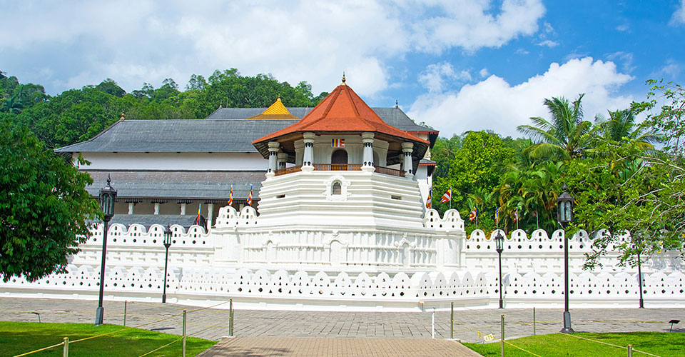
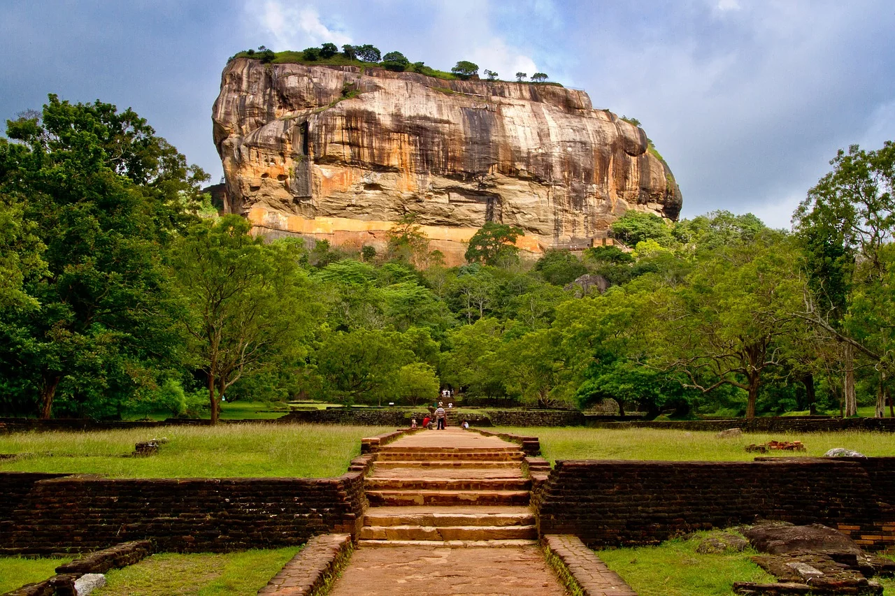
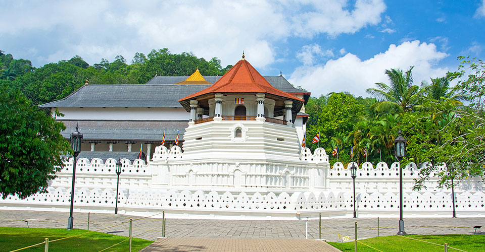
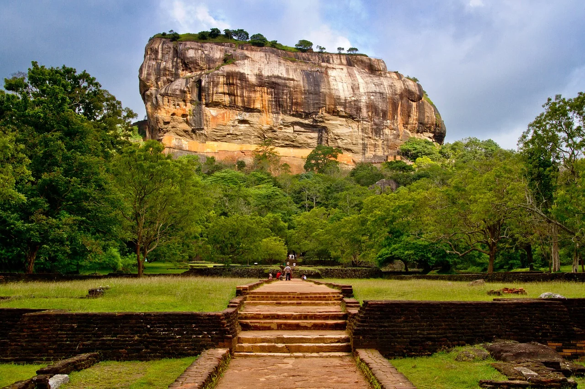

Sri Lanka is an island country lying in the Indian Ocean which is located between latitude 5°55′ and 9°51′ N and longitudes 79°41′ and 81°53′ E and has a
maximum length of 268 miles (432 km) and a maximum width of 139 miles (224 km). Sri Lanka climate includes tropical monsoons: the northeast monsoon (December
to March), and the southwest monsoon(June to October). Its terrain is mostly low, flat to rolling plain and mountains in the south-central interior.
When we consider about country's elevation, the highest point is Pidurutalagala(2 524 m), the lowest point is the Indian Ocean (0 m) and the mean elevation
is 228 m. Limestone, graphite, mineral sands, gems, phosphates, clay, hydropower, arable land are the main natural resources that we can find from Sri
Lanka. The population is primarily concentrated within a broad wet zone in the southwest, urban centers along the eastern coast, and on the Jaffna Peninsula
in the north.
Sinhalese, Sri Lankan Tamil, Sri Lankan Moors, Indian Tamil are the main ethnic groups of Sri Lankans and Buddhist, Hindu, Muslim, Romain Catholic, other
Christian are the religions of the country. "Democratic Socialist of Sri Lanka" is the conventional long form country name. This is a presidential republic.
Colombo is the commercial capital and the Sri Jayewardenepura Kotte is the legislative capital. Sri Lanka divided into 9 administrative divisions: Central,
Eastern, North Central, Northern, North Western, Sabaragamuwa, Southern, Uva, and Western.
4th February is the Independence Day (National Day) (4th February 1948) of Sri Lanka. Sri Lanka is densely populated. A physical environment of wide-ranging
diversity makes Sri Lanka one of the world's most scenic countries. As the home of several ethnic groups, each with its cultural heritage, Sri Lanka also has
a highly varied cultural landscape.
History of Sri Lanka
Ancient Greek geographers called Sri Lanka, Taprobane. Arabs referred to it as Serendib. Later European mapmakers called it Ceylon, a name still used occasionally
for trade purposes. It officially became Sri Lanka in 1972.
Sri Lanka has had a continuous record of human settlement for more than two millennia, and its civilization has been shaped largely by that of the Indian
subcontinent. The island’s two major ethnic groups, the Sinhalese and the Tamils, and its two dominant religions, Buddhism and Hinduism, made their way to
the island from India, and Indian influence pervaded such diverse fields as art, architecture, literature, music, medicine, and astronomy.
In fact, the island’s location – its position along hundreds of ancient trade routes and its proximity to India – has resulted in a potpourri of visitors,
immigrants, invaders, missionaries, traders and travelers, mostly from India, but also from East Asia and the Middle East. Many stayed on, and over the
generations, they assimilated and intermarried, converted and converted back again.
However, at first, Sri Lanka was divided into different states. The King Dutthagamani (161-137 BC) united them into a single kingdom. As well as being a
powerful ruler Dutthagamani was a great builder and he erected palaces and temples. The capital of the first Sri Lankan kingdom was at Anuradhapura.
The staple diet of the Sri Lankan people was rice but to grow rice needs to stand in water. However in the hot climate of Sri Lanka water soon evaporated.
Some water was provided by rain in the rainy season (October to April) but it was not enough. To gain extra water the people dammed streams and rivers.
In the time it became the rulers responsibility to provide water for farming. King Mahasena (274-303) built large reservoirs and irrigation canals to take
water from one area to another. The network of reservoirs and canals gradually became bigger and more complex. In the 2nd 3rd and 4th centuries, AD Sri Lanka
became a rich kingdom. She traded with India, China, Persia, and Ethiopia. However, from the 5th century, onward Sri Lanka suffered from invasions from India.
In the 10th century, the Chola kingdom became powerful in southern India. In the 13th century, the Tamils settled in the north of Sri Lanka and by 1505
Sri Lanka was divided into 3 areas. In the north lived Tamils. There was a Sinhalese kingdom in the Southwest based in Kotte and another in the center and
east based in Kandy.
The new eras in the history of Sri Lanka began when Portuguese (1505), Dutch colonialism (1636) and British colonialism (1796). After these critical eras,
in the early 20th century Sri Lankan nationalism grew. The Ceylonese demanded complete independence. In 1947 the British announced that India was to become
independent. The Ceylonese now demanded their independence and in June 1947 the British agreed to make Sri Lanka a dominion. Sri Lanka became independent
on 4 February 1948.
Tourism of Sri Lanka
Sri Lanka's tourism industry become more powerful in the last few years after the civil war. The tourism industry focuses on eco-friendliness and "quality
not quantity".
The strategic development plan of Sri Lanka Tourism strives for 1.5 million visitors in total (130,000 from Germany) in 2014, 2.5 million in 2016 and 4 million
in 2020. At the same time, tourism-related employment is supposed to increase from 125,000 in 2010 to 500,000 by 2016, tourism-based industry and services are
to be expanded and the economic benefits of tourism shall be distributed to a larger cross-section of the society.
The enormous growth of the tourism sector requires targeted investment in transport infrastructure; Mattala Rajapaksa International Airport was opened in 2013
in the south of the island and new expressways have shortened the way to the beach resorts of the west and the southwest. Several other road construction
projects are in progress. Just around the island's capital, Colombo, nearly 280 kilometers of new expressways are being built until 2020.
Sri Lanka has something offer to every type of traveler. Sri Lanka has beautiful hiking trails with sweeping views of tea plantations and waterfalls, world-class
luxury and boutique hotels across the country with beautiful spas and pools, there are beautiful, uncrowded surf breaks up and down the coast. This beautiful
island has been thrust into the spotlight and recently made it onto tons of Top Travel Destinations lists.
Why we should visit Sri Lanka
There are so many reasons why we should visit Sri Lanka. This beautiful island has so many varieties of places to visit and enjoy.
Sri Lanka has wildlife biodiversity, incredible sights, and cultural heritage, travel convenience, good climate, caves, tea and an early morning hikes, exciting
hotel services, peaceful beaches, rainforest walks, and so more to do.
That is why you should visit this beautiful island at least once a time of your life.
 


